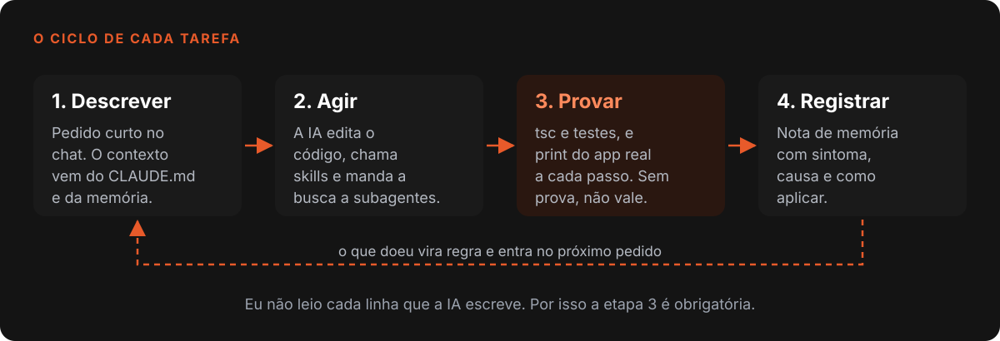
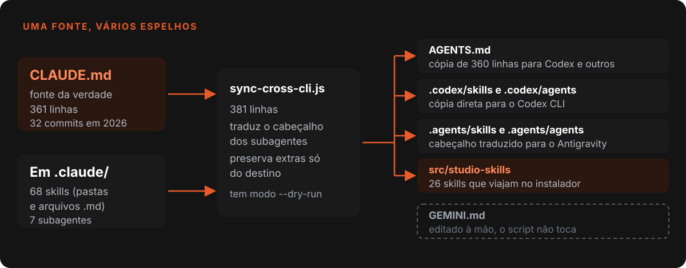
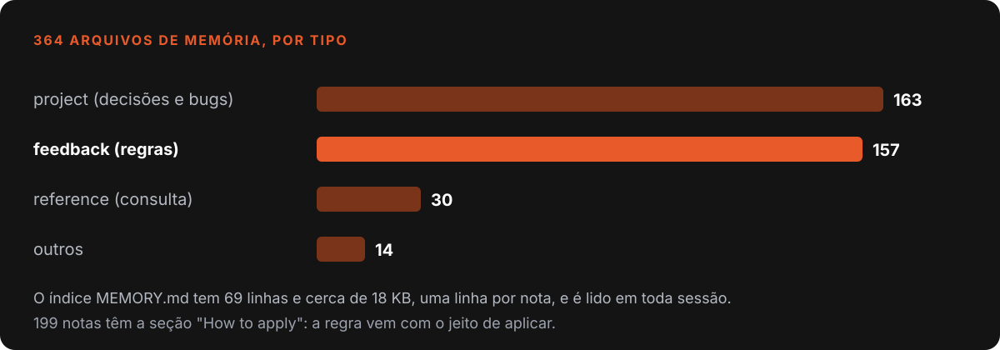
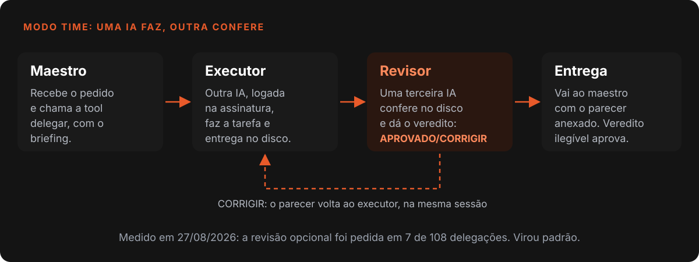

Nardoto
NardotoComo eu trabalho com IA: memória, skills e regras
Como organizo agentes de código: CLAUDE.md espelhado em outros CLIs, 364 arquivos de memória, 68 skills, subagentes e prova em teste, com os erros.

Sou engenheiro civil e construí o Nardoto Studio quase todo com agentes de código. Isso só funciona porque a IA não começa do zero a cada conversa: cada sessão abre com um contexto escrito, regras que cresceram com os erros e um jeito fixo de provar que a mudança funciona. Vagas de AI Engineer chamam esse conjunto de harness.
Este post mostra o que existe de fato no repositório, o que cortei e onde o método ainda falha. Os bugs que ele ajudou a achar estão em Bugs que só aparecem no cliente.
O que o código diz hoje (29/10/2026)
- A pasta de memória do projeto tem 364 arquivos: 163 de projeto, 157 de feedback (regras) e 30 de referência.
- Em
.claude/moram 68 skills e 7 subagentes; oCLAUDE.mdtem 361 linhas e 32 commits desde fevereiro de 2026.- Há 592 arquivos de teste em
tests/(578 de unidade, 14 de ponta a ponta) e 12 arquivos de pytest.
O ciclo: descrever, agir, provar, registrar
Toda tarefa segue quatro passos. Descrevo o pedido em poucas linhas, a IA age (edita código, chama skills, manda busca larga a um subagente), vem a prova e só então o registro: o que doeu vira uma nota de memória.

A frase da figura é a mais importante do post. Como não reviso todo o código gerado, a confiança vem de teste, tipos e, quando a mudança é de tela, um print do app real.
CLAUDE.md: uma fonte, vários espelhos
O CLAUDE.md da raiz é a fonte da verdade: stack, comandos, arquitetura, regras de cor e de idioma, mapa de portas. O Claude Code o lê por padrão 1. Mas uso também Codex, Antigravity e Gemini, e cada um procura as instruções num lugar.
Em vez de manter vários arquivos à mão, o scripts/sync-cross-cli.js (381 linhas, 22 commits desde maio) gera os espelhos. Ele copia o CLAUDE.md para o AGENTS.md, um formato aberto que vários agentes já leem 2, e replica .claude/skills e .claude/agents em .codex/ e .agents/. O GEMINI.md fica de fora de propósito, porque o papel do Gemini é outro.

Um detalhe custou caro: o Antigravity pula em silêncio o subagente cujo model não seja um nível que ele conhece, e um nome de ferramenta desconhecido trava o agente. Por isso o script traduz o cabeçalho (haiku vira flash) em vez de copiar. Nenhum erro aparece: o agente simplesmente não existe.
| Peça | Onde mora | Para que serve |
|---|---|---|
CLAUDE.md |
raiz | Regras e contexto de toda sessão |
AGENTS.md, .codex, .agents |
gerados | O mesmo conteúdo para os outros CLIs |
.claude/skills |
68 itens | Procedimentos que a IA carrega sob demanda |
.claude/agents |
7 arquivos | Subagentes com ferramentas e modelo próprios |
| Memória | 364 arquivos | Fatos que sobrevivem entre sessões |
Memória: uma nota, um fato
A memória fica em arquivos pequenos. Cada nota guarda um fato, com frontmatter (nome, descrição, tipo) e um corpo que responde duas perguntas: por que isso importa e como aplicar. O índice MEMORY.md tem 69 linhas e cerca de 18 KB, uma por nota. Só as primeiras 200 linhas ou 25 KB entram no início da sessão 1, então estou em cerca de 70% do teto.

O tipo que mais ajuda é o feedback, a regra aprendida com um erro. Em setembro, os servidores MCP internos morriam no instalador com "Connection closed". A nota guarda o sintoma, a causa (uma fuse do Electron desligada), o comando que decide em um minuto e a regra para o futuro. O caso está em Como fiz o chat de IA pilotar o próprio app com MCP.
Para os outros CLIs lerem a mesma memória, criei o servidor MCP nardoto-memory (maio de 2026): quatro ferramentas e teto de 80 KB de saída por sessão.
Skills, e a poda
São 68 skills: 37 em pasta e 31 em arquivo único. Predominam as de produção de vídeo e as de release. Vinte e seis estão em STUDIO_APP_SKILLS e viajam no instalador, porque o próprio app as usa.
Em 13/09/2026 podei 18 skills genéricas de referência (React, Zustand, TypeScript, Tailwind, Python e semelhantes), no commit f8ec9405. Tinham zero uso em 30 dias e o modelo já conhece essas tecnologias. Errei na primeira passada: tirei também a remotion-best-practices, e o sync-cross-cli.js quebrou, porque o app a embarca para os clientes. Ela voltou. Antes de tirar uma skill, confiro STUDIO_APP_SKILLS e as fichas dos agentes que a citam.
A mesma limpeza valeu para MCPs: toda sessão herdava a frota e o IDE chegou a 424 processos e 17,6 GB, 295 deles de MCP. Agora só o servidor do Studio sobe junto; o resto liga sob demanda.
Subagentes e economia de tokens
Os sete subagentes têm função clara: explorar (busca só de leitura, modelo barato), tech-lead (plano em ondas paralelas), qa-engineer e os de Electron, interface, prompts e animação. Busca que varre vários arquivos vai para o explorar, que devolve a conclusão e não o conteúdo. O cabeçalho com name e description é obrigatório; sem ele os CLIs ignoram o agente sem avisar. A documentação exige só esses dois campos 3.
Os outros combinados de economia estão no mesmo arquivo: antes de escrever, ver se já existe no código; ler só o trecho necessário; não reler o que acabei de editar. Ao enxugar prompts do app cortei 31% do texto de dois arquivos, depois de aprender que a duplicação real está entre funções que se compõem. O agente de busca me prometeu 40% a 50% de ganho em um trecho; na prática era zero. Desde então confiro cada veredito de subagente.
Provar: testes e print
A prova vem em camadas: Vitest (578 arquivos), Playwright (14 de ponta a ponta), pytest para o Python e tsc --noEmit com baseline de zero erros. Bug que doeu vira teste: o clique da janela 2 que digitava na aba da janela 1 tem cdpFlowPorJanela.test.ts.
Teste de unidade não pega tudo. Ao mexer numa feature, a IA a pilota no app real e tira print a cada passo. A regra nasceu de um erro do motor de tutoriais, que tratava "achei o botão" como sucesso: um projeto com nome repetido não era criado, e o vídeo saía errado sem aviso. Pilotar um pedido real de vídeo achou, em dez minutos, o que duas auditorias de código não acharam: das oito etapas, o agente usou a ferramenta nativa em apenas quatro, e o contexto estourou.
Paridade Studio e IDE
O chat do meu outro app, o Nardoto IDE, é um porte do chat do Studio. Em 23/07/2026 virou regra: toda mudança no chat do Studio é replicada no IDE na mesma sessão, pois antes se acumularam mais de sete correções e portei tudo de uma vez. A regra lista as diferenças (o IDE usa contextBridge puro e grava em .nardoto/), para adaptar em vez de copiar às cegas.
Modo Time: uma IA faz, outra confere
No Modo Time o chat vira maestro: a tool delegar manda subtarefas para outros CLIs já logados, somando as assinaturas que a pessoa já paga. A recursão é barrada pelo ambiente: o delegado recebe NARDOTO_NO_DELEGAR=1 e nem enxerga a ferramenta.

A revisão cruzada nasceu de uma queixa: o time estava tímido, cada IA falava só com o maestro. Com a revisão opcional, medi no disco que o maestro a pedia em 7 de 108 delegações. Hoje ela liga sozinha em texto e em código ou análise de peso médio ou pesado, no arquivo revisaoCruzada.js.
Também errei ali. Pus um teto de tokens por delegação, e em setembro um job de tradução foi cortado em 293.342 tokens com o trabalho indo bem. Removi o teto. Ficaram vigias que medem vida, não consumo: 8 minutos de silêncio ou 2 sem arrancar.
Onde o método falha
- O CLAUDE.md está grande. Tem 361 linhas, e a documentação recomenda menos de 200 1. E há trecho velho: ainda diz "Versão atual: 6.1.0", e o último release no git é o v11.2.1.
- Instrução não é garantia. O próprio manual trata o CLAUDE.md como contexto, não como configuração imposta. O que não pode falhar precisa de teste ou de um hook.
- A memória envelhece. Nota de setembro pode descrever código que já mudou; confiro o arquivo antes de agir.
- Eu não leio tudo. Esse é o motivo de toda a prova acima.
O que eu levaria para qualquer projeto
- Uma fonte da verdade, gerada para o resto. Se os espelhos são escritos à mão, divergem.
- Memória em notas pequenas, com o porquê. Sintoma, causa e como aplicar.
- Pode skill e MCP por uso medido. O que ninguém usa só ocupa contexto.
- Delegue busca larga e confira. O resumo de um subagente é uma hipótese.
- Prova antes de "pronto". Teste, tipos e print do app real; sem isso, você descobre no cliente.
- Quem confere não é quem fez. Revisão cruzada entre modelos pega o que a autocrítica deixa passar.
Referências
- Como o Claude Code lembra do seu projeto: CLAUDE.md e memória automática
- AGENTS.md, formato aberto para guiar agentes de código
- Subagentes no Claude Code, documentação oficial
Escrito por Tharcisio Nardoto, engenheiro civil e criador do Nardoto Studio.